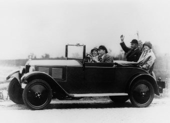
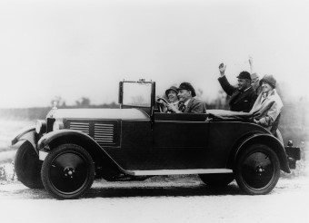
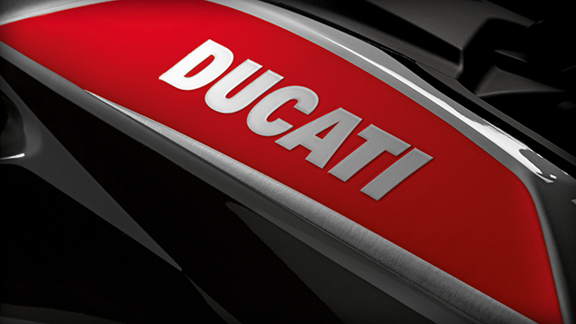
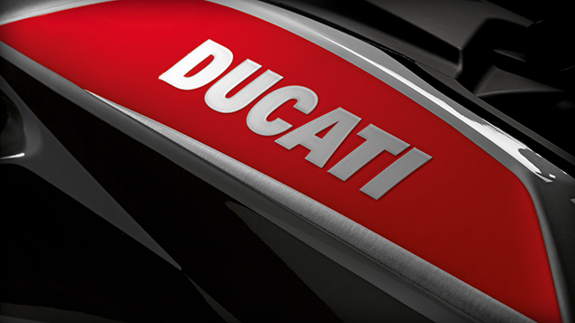

AUDI'S HISTORY
아우디의 역사
1) 아우토 유니언 창립 ~ 폭스바겐 그룹에 합병(1932년~1964년)
지금의 아우디는 작센 지방의 4개의 자동차 업체가 1932년 합병하면서 탄생했다. 1901년에 아우구스트 호르히가 세운 호르히, 그리고 그가 다시 회사를 나와 1909년 세운 아우디 베르케, 그리고 덴마크 엔지니어 요르겐 라스무센(Jorgen Skafte Rasmussen)이 1904년에 설립한 데카베(DKW), 요한 밥티스트 윙클호퍼(Johann Baptist Winklhofer)와 리처드 아돌프 예니케(Richard Adolf Jaenicke)가 1885년에 설립한 반데러(Wanderer Werk)가 바로 그 4개의 자동차 업체이다.
데카베는 1904년, 덴마크의 엔지니어 요르겐 라스무센이 자신의 보일러 공장을 설립하면서부터 시작되었다. 1927년, 요르겐 라스무센은 데카베의 승용차용 엔진을 드디어 개발했다.
이 첫 번째 데카베 모델은 1928년부터 생산되기 시작했다.
반데러는 1885년 자전거 수리업을 시작으로 하여 1896년에 켐니츠(Chemnitz)에서 자전거 제작 회사를 모태로 사업을 시작했다. 1902년에는 모터사이클을, 1912년에는 최초의 반더러 승용차를 5/12마력 4기통 엔진을 탑재하여 시험 주행을 마치고 1913년부터 시판했다.
한편 호르히사는 1926년 독일 최초의 8기통 승용차 호르히 303 베를린(Horch 303 Berlin) 모델을 선보였다. 이 모델은 독일 최초로 8기통 엔진을 탑재한 양산 모델이었다. 이 8기통 엔진은 배기량 3132cc에 DOHC 형식으로 최고 출력은 60마력에 달했다.
이들 네 회사는 1차 세계대전 이후 계속된 독일의 경제 불황으로 인해 자동차 업체가 위기에 빠지게 되면서, 이들의 채권 은행과 작센 지방의 자동차공업의 명성을 유지하고 싶었던 작센 행정당국의 압력하에 1932년 합병하면서 아우토 유니언(Auto Union AG)으로 새롭게 출발하게 되었다.
 

- 1926년에 출시한 ‘호르히 303 베를린’(Horch 303 Berlin)
- 1928년에 선보인 데카베의 전륜구동차

데카베는 전륜 구동 방식의 소형차에 강했고, 반데러는 중형차 부문에서 강점이 있었으며, 호르히는 고급 대형 세단에서 강세를 보이는 등 각각의 강점을 갖춘 회사들이 합병된 결과, 아우토 유니언은 다양한 자동차 라인 업과 함께 보다 나은 제작 시스템을 갖출 수 있었다. 이들은 합병 후에도 각 브랜드의 독립성을 살려 각자의 브랜드 명으로 제품을 출시하였다.
- 아우토 유니언의 창립 당시의 모습(1932)

- 반데러의 엔진을 탑재한 아우디 프론트(1933)
통합 다음 해인 1933년 베를린 모터쇼를 통하여, 아우토 유니언은 표준형 승용차로서는 세계 최초로 전륜 구동 방식을 채택한 모델인 아우디 프론트(Audi Front)를 선보였다. 이 차는 데카베의 전륜 구동계에 반데러(Wanderer)의 6기통 엔진(엔진 내에 실린더가 6개인 엔진)을 탑재했다. 아우디 프론트는 개별 부품들을 차체에 직접 장착하지 않고 몇 개의 관련된 부품들을 하나의 덩어리로 생산해 장착하는 모듈화 설계 개념을 최초로 도입했다. 경량 엔진과 넓은 실내 공간, 좋은 연비 등을 두루 갖춘 아우디 프론트는 아우디를 전륜 구동차 부문에의 선두주자가 될 수 있었다.
2) 폭스바겐 합병 이후 ~ 아우디의 부활(1965년~1987년)

- A4의 초기 모델 아우디 80(1972)
1964년 폭스바겐 AG는 아우토 유니언의 상표권과 지분 50%를 인수했고, 그 후 2년에 걸쳐 아우토 유니언의 모든 지분을 획득했다. 폭스바겐은 4행정 엔진이 자동차 업계의 대세가 되면서 2행정 엔진 자동차로 알려졌던 데카베 브랜드 대신 아우디를 앞세워 본격적으로 ‘아우디 시리즈’를 출시했다.
1968년 수석 디자이너인 루드비히 크라우스(Ludwig Kraus)가 아우디 100(Audi 100)을 개발 · 완성했다. 이 제품은 중대형 고급 승용차 시장을 겨냥하여 제작되었으며, 기대 이상의 판매고를 올리며 아우디가 아우토 유니언 내 4개 브랜드 중 독자적인 브랜드로 독립하는 데 중요한 역할을 했다.
한편 루드비히 크라우스는 아우디 100에서부터 시작된 새로운 디자인 콘셉트를 계속 발전시켜 1972년 여름, Audi 80을 개발 · 완성했다. 이 모델에 탑재되었던 4기통 OHC 엔진은 나중에 폭스바겐 그룹에서도 이용하게 되며, 폭스바겐이 가장 많이 사용하는 엔진으로 자리매김했다. 아우디 80은 6년 만에 100만 대 이상이 판매되며 아우디라는 브랜드를 소비자들에게 각인시키는 역할을 했다.

아우디의 기술 개발을 이끈 페르디난트 피에히 회장
1972년 포르쉐(Porsche)에서 개발 책임자로 일했던 포르쉐 박사의 외손자인 페르디난트 피에히(Ferdinand Piëch)가 아우디의 기술개발부에 입사하게 되었다. 그는 1975년부터 1988년까지 기술개발부의 책임자로 활동하며 풀타임 4륜 구동 기술인 아우디 콰트로(Audi Quattro), 공기저항계수를 획기적으로 낮춘 차체 디자인, 녹을 방지하는 아연도금 차체 개발 등 아우디의 다양한 기술 혁신을 이끌었다.
1980년 제네바 모터쇼에서 아우디의 트레이드 마크가 된 풀타임 4륜 구동 아우디 콰트로(Audi Quattro)를 선보였다.
아우디는 2년 후 1982년 터보 차저 엔진을 얹은 스포츠 쿠페 모델인 아우디 콰트로를 출시해 기존의 상식을 뒤집었다. 이 후 아우디 콰트로는 1984년 몬테카를로 랠리에서 1, 2, 3위를 모두 차지하는 등 세계 각지의 랠리에서 연달아 우승을 거두면서 우수한 성능을 입증했다. 아우디는 점점 많은 차량 모델에 콰트로를 옵션으로 적용하여, 오늘날에는 전체 라인업에 풀타임 4륜구동을 적용하고 있다.
3) 페르디난트 피에히의 회장 임명 ~ 현재(1988년~2018)
1988년, 페르디난트 피에히(Ferdinand Piëch)가 아우디의 회장으로 임명되어 1992년까지 재임했다. 페르디난트 피에히의 취임 이후 아우디의 기술 혁신은 가속화되었다. 1989년에는 아우디는 터보 디젤 직분사 엔진(TDI:Turbo Diesel Direct Injection)을 선보였다. 이전에도 직분사 방식의 디젤 엔진은 있었으나 효율과 성능이 뛰어남에도 불구하고, 고유의 진동과 소음 때문에 트럭 등의 상용차에만 사용되어 왔다.
그러나, 13년간의 개발 끝에, 아우디 엔지니어들은 승용차용 직분사 디젤 엔진을 개발하는 데에 성공했다. 터보 차저와 직분사 방식을 동시에 차용한 아우디의 디젤 엔진은 뛰어난 연소 효율로 경제성을 갖추었다.

- 프리미엄 모델 아우디 A8(1994)
1994년 제네바 모터쇼를 통하여 아우디는 새로운 프리미엄 모델인 아우디 A8(Audi A8)을 선보였다. 아우디 A8은 차체를 100% 알루미늄으로 제작한 세계 최초의 양산 승용차였다. 그리고 아우디는 기존 제품의 라인업에 새로운 이름을 붙이기 시작했다. 기존의 아우디 80은 A4로, 아우디 100은 A6로, 그리고 아우디 V8로 불리던 프리미엄 모델은 A8로 명명법을 통일했다. 1998년 아우디는 경량 스포츠카 아우디 TT(Audi TT)를 선보였다. 이미 90년대 중반에 콘셉트카로 선보였던 모델이었는데, 아우디는 콘셉트 카의 모습 그대로 대량 생산을 하기 시작했다.

아우디는 기존 라인업의 모델명을 정리한 이후 새로운 라인들을 출시하며 서서히 공략 시장을 넓혀갔다. 2005년에는 아우디 최초의 SUV인 Q7을 시작으로 SUV라인인 Q시리즈를, 2006년에는 고성능 스포츠카인 아우디 R8을 연이어 출시했다. 2007년부터는 아우디 A4, A6, A8 등 기본 모델의 콘셉트에 보다 고성능을 더한 S시리즈를 출시했다.
현재 아우디 그룹의 최대주주는 폭스바겐 그룹으로, 전체 지분의 99%를 소유하고 있다. 아우디 그룹은 그 자회사로 람보르기니, 두카티를 두고 있다.
- 아우디의 SUV라인 Q시리즈 중 Q5(2008)
 

Lamborghini
Ducati